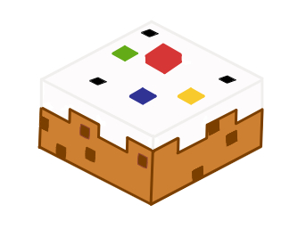
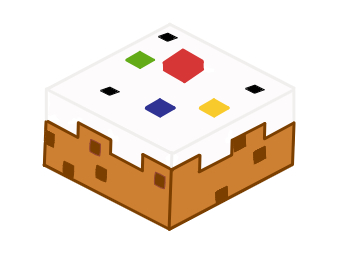

Ever missed cakewars since the unfortunate extreme debt the mineplex server hosts were in? Fear no more, 2 idiots have begun a journey to get cakewars up and running. Filled with almost all the mechanics of the original, plus extras to make it our own, we started this project to finally fill the void that no cakewars provides.
~Overview~
This project is close to finishing, as of May 2024, and there is plans for multiple extra updates including kits, new decor, islands and more. There are no current plans for other maps, as the way it's programmed makes it a bit of a nightmare. We aimed to make it as faithful as possible, yet we're spelling it as "Caikwars" because why not. This project is just for fun, has no money behind it and exists purely because we felt like it.
Below is a gallery of images to give you an idea of the map. There is 4 seperate team islands (colour coded), 4 diagonally joining emerald generators and one centre middle island. The theme is:
~Dwarven Kingdom~
~Kits & Future~
Kits is an update planned for 1.1 or later, 4 different types styled after the originals. That is: Builder, Fighter, Tank and Ranger. Their detailed descriptions will be below:
~Extras~
~Contact~
 
